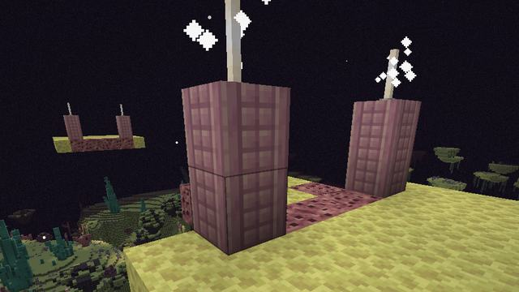
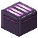
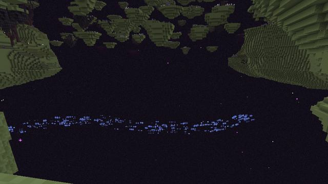
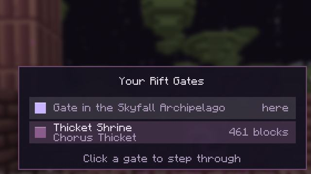
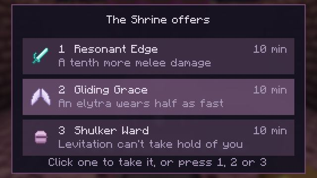
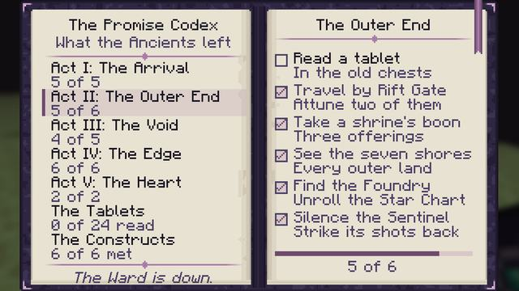
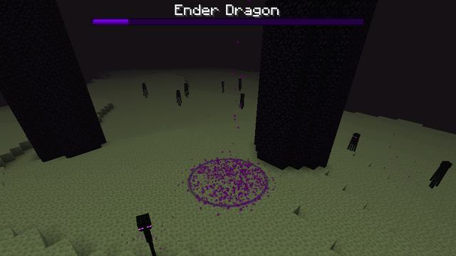

How it plays
From the arrival to the dragon: every system, with the numbers the game uses.
Arrival and the Waystation

Step into an End portal and it sets you down in the outer End, not on the obsidian platform by the dragon: in the same direction from the End's centre as the portal is from the Overworld's, 1,100 to 2,500 blocks out, on the nearest island top within 256 blocks of that point (with none, it builds an end-stone islet there). An Ancient Waystation is built where you land. A portal within 96 blocks of one used before brings you to the same Waystation.
Its Return Gate takes you to your respawn point: stand in it for 2 s. Each player's first arrival brings a kit of their own: the Promise Codex, a Star Chart sealed on the Shulker Foundry, a Mire Lily and a Resonite Shard to wake the Rift Gate on the Waystation's edge, and three Ancient Tablets. The chest holds what travellers share: Ender Pearl, Bread, Torch, Cracked Void Anchor.
The Ancients' Ward
A wall 640 blocks round the End's centre keeps everyone from the main island, the Shattered Rim's inner ring and the dragon. Walk at it and you are set back outside: "The Ancients' Ward holds. Seals unbroken: three. A held Ender Pearl leads to the next." Ender pearls thrown at it bounce off, and within 24 blocks you see it as a wall of motes. While it stands the dragon doesn't wake.
Three seals bind it, each kept by a guardian: the Shulker Foundry's Hollow Sentinel, the Rift Maw's Void Leviathan and the Unfinished Citadel's Architect. A seal breaks for the whole world when its guardian falls; when the third breaks, the Ward falls.
Hold an Ender Pearl in the End, more than 160 blocks from the centre, and its green sparks drift the way you need to go: while the Ward stands, to the nearest place where the next unbroken seal is kept (a Shulker Foundry, then a Rift Maw, then an Unfinished Citadel); once it is down, to the heart of the End.
The Void Anchor
Fall into the void with a Void Anchor in your inventory and, 24 blocks below the dimension's lowest block, it pulls you back to your last safe footing, gives you Slow Falling for 5 s, and cracks. A glider is caught only once it is 56 blocks under and still going down. Craft a Cracked Void Anchor with an ender pearl or Rift Dust to recharge it.
Drift Islets


Small islands ferry you across the void. A Drift Islet shuttles between two moorings on facing island edges, 12 to 96 blocks apart, at 3 blocks a second, and waits 3 s at each end. Stand on it and it carries you. A mooring is a dock of Ancient Purpur with a lit post at each end. They are found across the outer lands and the Rim.
Updrafts
Updraft Vents stand on island edges in the Skyfall Archipelago and the Voidscar Wastes and push a column of air 32 blocks up; one you craft reaches 16. Step in and it lifts you; sneak to sink. Gliding with an elytra, the column is twice as wide and lifts harder, so you can climb from one island to the next.

Void currents


Under the islands of the Skyfall Archipelago and the Voidscar Wastes run void currents, unseen rivers you can follow by their lit motes. Fall into one and it carries you along at 8 blocks a second, holding you up for as long as 20 s, then washes you ashore on the nearest island edge within 32 blocks. Glide along one for 30% more speed.
Rift Gates


Dormant Rift Gates stand in the Ancients' places. Attune one with a Mire Lily and a Resonite Shard and it joins your network; use any attuned gate to pick another and step through. Your network holds up to 32 gates, a jump costs nothing, and you wait 30 s between jumps. A name tag renames a gate for you.
Void Shrines


Lay offerings on a Shrine Altar. Each is worth favour; at 3 favour the altar offers three of its six boons, and you take one. Each altar gives you a boon once every 20 minutes, so visit several.
| Favour | Offerings |
|---|---|
| 1 | |
| 2 | |
| 3 | |
| 4 | Starfall Core |
| 5 |
| Boon | Does | Lasts |
|---|---|---|
| Gliding Grace | An elytra wears half as fast | 10 minutes |
| Pearl Sense | Ender Pearls recharge twice as fast | 10 minutes |
| Void Sight | Vents and the Ancients' ruins outlined | 5 minutes |
| Rift Step | Your next void fall is caught | until it catches a fall |
| Resonant Edge | A tenth more melee damage | 10 minutes |
| Shulker Ward | Levitation can't take hold of you | 10 minutes |
Star Charts, the Codex and the tablets


A Star Chart, unrolled in the End, marks the nearest place it names: a Shulker Foundry, a Rift Maw, an Unfinished Citadel or a Fallen Observatory. You arrive with the Foundry's; the Hollow Sentinel gives you the Maw's and the Leviathan the Citadel's; an Observatory's desk gives each traveller one.
The Promise Codex keeps the five acts' goals and the constructs you have met. Ancient Tablets, in the Ancients' chests, each copy a page of their story into it: 24 pages, read in order.
The dragon


Fought last, behind the Ward, the dragon has 450 health at first. Below 25% of it, it roars into a third phase and calls Crystal Wardens to its tallest pillars: while one beams at you, the dragon heals. Every 20 s it marks a player with a closing ring for 1.5 s, then dives there and leaves a cloud of void breath: Slowness II and 2 damage a second for 6 s.
Wrath: dragon rematches
Respawn the dragon with crystals as in vanilla. Each kill raises the world's Dragon Wrath by one, up to 5: the next dragon has more health and calls more Wardens, and the hoard it leaves in a chest by the exit portal is richer. Its Dragon Scales each repair half an elytra in an anvil.
| Wrath | Health | Wardens | Hoard |
|---|---|---|---|
| 0 | 450 | 3 | 3 Dragon Scale |
| 1 | 562.5 | 3 | 4 Dragon Scale, Starmetal |
| 2 | 675 | 3 | 5 Dragon Scale, 2 Starmetal |
| 3 | 787.5 | 4 | 6 Dragon Scale, 3 Starmetal, Leviathan Fin (20% chance), Architect's Lattice (20% chance) |
| 4 | 900 | 4 | 7 Dragon Scale, 4 Starmetal, Leviathan Fin (20% chance), Architect's Lattice (20% chance) |
| 5 | 1012.5 | 5 | 8 Dragon Scale, 5 Starmetal, Leviathan Fin (50% chance), Architect's Lattice (50% chance), Wrathful Crown |
Starfall
Once the Rift Maw's seal is broken, stars fall on the outer End while a player is more than 1,000 blocks out: one every 40 minutes or so (give or take 25%), at most 2 a day, on an island 48 to 160 blocks from a player. For 30 s a beam marks the spot and players within 256 blocks are told which way. It leaves a crater 4 to 6 blocks across the radius with 3 to 6 Starmetal Ore and a Starfall Core, and never lands within 8 blocks of anything built. A Star Compass points to a falling star, or else to the last crater.
The Codex's acts
| Act | Until it opens | Goals |
|---|---|---|
| The Arrival | Open from the start. |
|
| The Outer End | Sealed until you hold a Void Anchor. The Ancients wrote these pages for those who could find their way back. |
|
| The Void | Sealed until the guardian of the Shulker Foundry is defeated. |
|
| The Edge | Sealed until the Void Leviathan is defeated. The last pages are about a place that was never finished. |
|